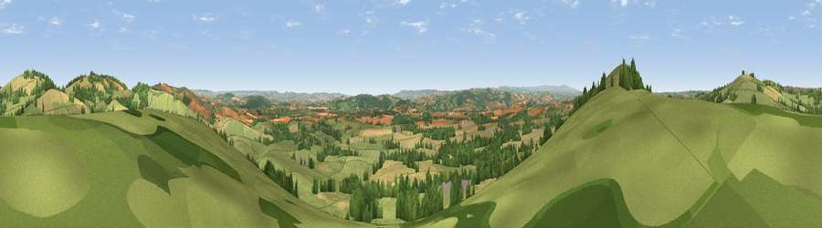

Viewpoint near Thorverton
#6105 in England · top 6% of its area beats it · near ThorvertonWhere it is
The exact computed spot (SS 90888 03212). Click the marker for map links.
The view, rendered

A 360° render of this exact spot computed from the terrain model, tree cover and land cover — summer colours, afternoon light, calibrated against photographs of famous viewpoints. Real trees, hedges and buildings will differ in detail.
The panorama
Grey silhouette: terrain skyline in each direction (720 bearings, Earth curvature and refraction included). Dashed green: skyline with trees (+15 m) and buildings (+8 m) as obstacles. Blue strip: how far the ground is visible on each bearing.
Where the view opens
Wedge length = distance to the farthest visible ground on that bearing (vegetation-aware). Rings at 10, 25 and 50 km.
What fills the view
55% grassland · 28% cropland · 17% woodland ·
Angular shares of the visible panorama (visual magnitude), not map area. Landscape diversity 0.44 (0–1 Shannon).
Key numbers
More beautiful places nearby
The staircase of upgrades: each row has a higher view potential than everything closer. Driving times are estimates from straight-line distance, calibrated against real road routing — check an actual route before setting out.
| Place | Direction | Drive | Score |
|---|---|---|---|
| Raddon Hills | W · 1 km | ~3 min | 78.2 |
| Viewpoint near Stockleigh Pomeroy | W · 1 km | ~4 min | 78.9 |
| Viewpoint near Whitestone | SSW · 10 km | ~19 min | 79.8 |
| Viewpoint near Kenn | S · 19 km | ~33 min | 80.0 |
| Viewpoint near Kenton | S · 22 km | ~37 min | 80.7 |
| Viewpoint near Kenton | S · 22 km | ~37 min | 82.9 |
| High Peak | SE · 26 km | ~42 min | 85.3 |
| Viewpoint near Luxborough | N · 38 km | ~57 min | 85.5 |
50.81815, -3.55030 · source: screening · position refined by local search. Computed location — check access rights before visiting.